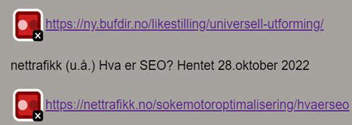
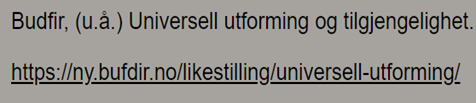
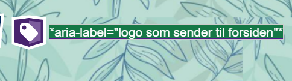
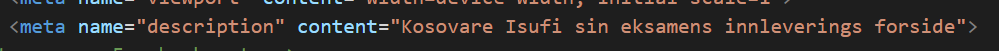
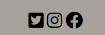
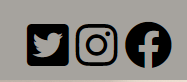

Analyse

Webaim wave
Det ble først gjort en analyse av nettsiden ved hjelp av webaim wave. Den undersøker universell utforming, og det ble gjort noen forbedringer for å optimalisere den universelle utformingen.
Det første som ble fiksa var fargekontrastene. Det var for lite fargekontrast mellom kildene og bakgrunnsfargen. Den vanlige blå/lilla fargen som dukker opp når man legger inn Kilder passa ikke bra med den brune bakgrunnen. Fargen ble da skifta til svart på kildene.
før
etter
Etter det ble andre error sjekka. Nettsiden trengte flere beskrivelser. Jeg lo til aria-label på alle bildene, kildene og ikonene. Det gjør det enklere for opplesende hjelpemidler å få med seg all viktig informasjon på nettsiden, og forstå hvor hver link fører. En alert var også å passe på at disse beskrivelsene var unike for hvert element
Et eksempel:
Det var også et problem med textarea som ikke var koblet til en label, på grunn av en syntax feil. Som ble fikset på.
Det var også noen alerts å fikse på. Det var noen headings som ble hoppet over, som ikke passet med rekkefølgen.
Etter at disse feilene ble fikset ble nettsiden mye mer tilpasset, slik at flest mulig folk kan bruke nettsiden. UU ble opptimalisert. Nesten alle alerts og errros ble fiksa på. Det var en alert som ikke ble fiksa på, det var redundant link. Denne alerten kom opp siden logoet og hjem på menypunktet hadde samme link og stod nærme hverandre. Å endre på den hadde ikke passet med oppgaven.
Wave
før
etter
For lite kontrast mellom lenkene og bakgrunnen sidene: CMS, UU og SEO
mørkere farge på lenkene førte til mer kontrast
bildene har ikke unike beskrivelser, sider: forsiden, UU og SEO, CMS og analyse
Bildene får mer unike beskrivelser
Tomme lenker i footer, logoen og hamburgermenyen på alle sidene i tilegg til share buttons på innholdssidene.
Legger til aria-label som beskriver hva lenken er
Skippa heading i send.html
legger til h2 i main i send.html slik at h3 i footer ikke hopper over heading
skippa heading i kontakt_oss.html
skifter til en lavere heading
i Under kontakt_oss.html var ikke label og textarea kobla sammen
skifta fra name=melding til id=melding
Contrast error
Alert
Error
Alert
Alert
Warning + alert
Lighthouse
Neste analyse som ble tatt på nettisden var lighthouse. Etter wave analysen ble alt av UU 100 på alle nettsidene både på mobil og desktop. Da ble optimalisering av SEO satt på fokus. Det var ikke mye å fikse på, kanskje fordi jeg allerede hadde fikset på UU. UU og SEO påvirker ofte hverandre.
Eksempel på en av descriptionene:
SEO ble først analysert på desktop. scoren var lik på alle sidene, siden erroren var det samme. Sidene fant ikke noe meta description. Unik meta description ble lagt til på alle sidene, slik at det blir enklere å søke opp hver nettside og få opp det som er innholdet på sidene.
Etter det ble SEO på telefon sjekket. Problemet var at ikonene ikke var store nokk. Det førte til at knappene ikke ble veldig brukervennelig på telefon. Når jeg fiksa på størrelsen ble det enklere å trykke på knappene:
før
etter
Etter disse feilene ble fikset ble søkemotoroptimaliseringen forbedret på alle sidene.
både på desktop og telefon ligger den nå på 100.
Lighthouse før etter Error desktop Ingen av sidene hadde meta description, SEO lo på 90 på alle sidene lo til meta description, SEO gikk til 100 warning phone Størrelsen på ikonene var for små, SEO lo på 97 på alle sidene størrelsene på ikonene ble byttet fra 1,5 rem til 2. SEO gikk fra 97 til 100
Du kan lese mer på tilgjenlighetsærkleringen:
Trykk her